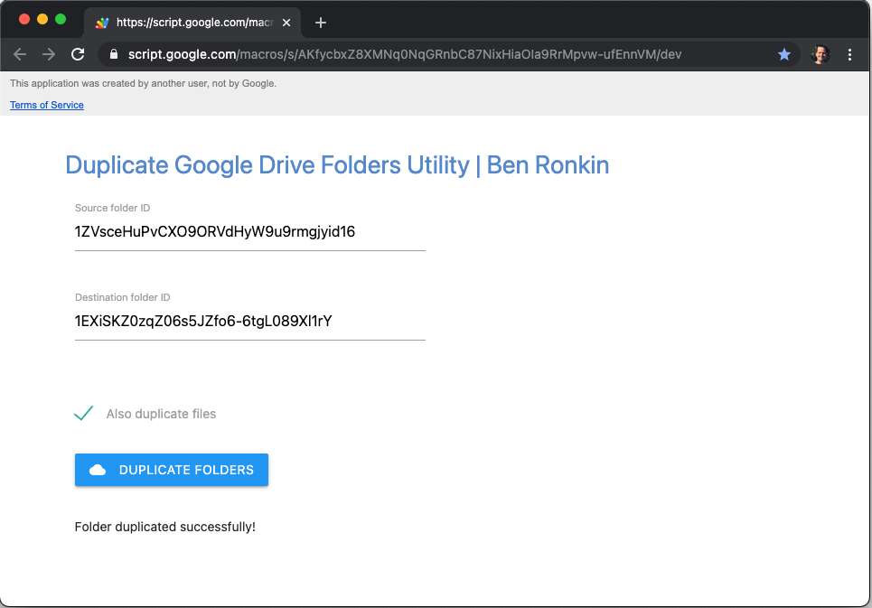

As a Google Workspace developer, I live in Google Drive all day long. It's often the case that I need to duplicate a complex structure of Drive folders and files.
For example, when I create a new project, I have several folders and files to contend with. There are folders where I keep my scripts, folders where I store Google Sheets that are used for reporting, folders that contains configuration files that enable users of my systems to control their operations, folders that contain artifacts such as user guides, folders where my scripts execute the work, etc.
I have one set of folders that I use to develop the initial solution, as well as handle bugs and feature requests. But then I need a duplicate folder system for my production environment, because – well – developing in a production environment isn't the healthiest thing to do.
Sometimes I even have to duplicate the folders a second time when users ask for a sandbox environment where they can try out the system without having to worry that they might break something.
Unfortunately, there is no easy way in Google Drive right now to duplicate folders quickly like you can do with a Google Sheet, for example. You have to copy stuff manually one by one, which is very annoying.
In this blog post I'll walk you though the process of creating a Google Apps Script web app that will automate the folder duplication process. It will look like this:
the UI is pretty simple: You have a form with two input fields for the IDs of the source and destination folders (what do you want to copy and where to), a checkbox to optionally duplicate files in folders as well, a button to trigger the work, and a message container.
Obviously, I could have made things prettier by using a Drive picker, but that would involve an API, authentication token, etc, and I didn't want to make things more complicated than they need to be.
This solution will duplicate a folder with any number of nested sub-folder levels. It uses recursion to dig into sub-folders copying everything inside until it reaches the deepest sub-folder.
To use the form, I copy the ID from the URL of the folder that I want to duplicate. I then create a destination folder, copy its id from its URL, and paste the IDs in the form. Check the box if I want to also copy the files therein, and click the button. After a minute or two, the entire source structure is copied as is to the destination.
The project structure
For this project, create a new Google Apps Script with three files in a folder named public:
- public/index.html: The HTML that is rendered to the user.
- public/mainjs.html: The JS that will handle client-side operations.
- public/styles.html: For minor CSS adjustments.
- Code.js: Handles server-side work.
- appscript.json: Contains script configuration
The GAS will work as a web app and will operate in Google Drive. For that, we need to adjust the appscript.json as follows:
{
"timeZone": "America/Los_Angeles",
"dependencies": {},
"webapp": {
"access": "MYSELF",
"executeAs": "USER_DEPLOYING"
},
"exceptionLogging": "STACKDRIVER",
"oauthScopes": ["https://www.googleapis.com/auth/drive"],
"runtimeVersion": "V8"
}
Setting up the web app
For the GAS to serve the form, we need to set up a doGet function that will serve the contents of the public/index.html file. And since index.html contains references to the public/mainjs.html and public/styles.html files, we need an include function as well.
// Code.js:
function doGet(request) {
return HtmlService.createTemplateFromFile('public/index').evaluate();
}
function include(filename) {
return HtmlService.createHtmlOutputFromFile(filename).getContent();
}index.html has a straightforward HTML structure. I'm using materializeCSS to reduce the amount of CSS work I need do, but you don't have to. You can see that I'm also including the CSS and Javascript files:
<!DOCTYPE html>
<html lang="en">
<head>
<link
rel="stylesheet"
href="https://cdnjs.cloudflare.com/ajax/libs/materialize/1.0.0/css/materialize.min.css"
/>
<link
href="https://fonts.googleapis.com/icon?family=Material+Icons"
rel="stylesheet"
/>
<?!= include("public/styles"); ?>
<meta charset="UTF-8" />
<meta name="viewport" content="width=device-width, initial-scale=1.0" />
<title>Duplicate Google Drive Folders Utility | Ben Ronkin</title>
</head>
<body>
<script src="https://cdnjs.cloudflare.com/ajax/libs/materialize/1.0.0/js/materialize.min.js"></script>
<?!= include("public/mainjs"); ?>
</body>
</html>The code for the page header and the form couldn't be simpler. I set up a few IDs to make it easier to target the elements in the Javascript file:
<div class="container">
<h1>Duplicate Google Drive Folders Utility | Ben Ronkin</h1>
<div class="row">
<form class="col s12">
<div class="row">
<div class="input-field col s6">
<input id="sourceId" type="text" />
<label for="sourceId">Source folder ID</label>
</div>
</div>
<div class="row">
<div class="input-field col s6">
<input id="destinationId" type="text" />
<label for="destinationId">Destination folder ID</label>
</div>
</div>
<div class="row">
<div class="input-field col s6">
<label>
<input type="checkbox" id="copyFilesCheck" />
<span>Also duplicate files</span>
</label>
</div>
</div>
<div class="row">
<div class="input-field col s6">
<a class="waves-effect waves-light btn blue" id="copyFoldersBtn"
><i class="material-icons left">cloud</i>Duplicate Folders</a
>
</div>
</div>
<div class="row">
<div class="col s6" id="message"></div>
</div>
</form>
</div>
</div>styles.html contains minimal CSS, which you can change as you see fit:
<style>
h1 {
font-size: 2rem;
color: #5588cc;
}
#copyFoldersBtn {
margin-top: 20px;
}
.red-text {
color: red;
}
</style>Client-side Javascript
mainjs.html contains the code that responds to the form button clicks. It collects the data from the form and sends it to the server-side code for processing. It also contains callback functions that handle the success or failure of the server-side operation.
First, we set up an event listener for the button:
<script>
window.addEventListener('DOMContentLoaded', () => {
const copyButton = document
.querySelector('#copyFoldersBtn')
.addEventListener('click', () => {
copyFolder();
});
});
</script>The copy function notifies the user that the duplication process has begun, and passes the form data to the server:
function copyFolder() {
document.querySelector('#message').classList.remove('red-text');
document.querySelector('#message').innerText = 'Duplicating folder...';
const sourceId = document.querySelector('#sourceId').value;
const destinationId = document.querySelector('#destinationId').value;
const isCopyFiles = document.querySelector('#copyFilesCheck').checked;
google.script.run
.withSuccessHandler(onCopySuccess)
.withFailureHandler(onCopyFailure)
.copyFolder({ sourceId, destinationId, isCopyFiles });
}The callback functions simply update the user about the status of the operations:
function onCopySuccess() {
document.querySelector('#message').classList.remove('red-text');
document.querySelector('#message').innerText =
'Folder duplicated successfully!';
}
function onCopyFailure(e) {
document.querySelector('#message').classList.add('red-text');
document.querySelector('#message').innerText = e.message.slice(
7,
e.message.length
);
}Server-side processing
So far in Code.js, we're handling the get request from the browser. We now need to add the copyFolder function that will do the heavy lifting. The setup of the function is simple:
function copyFolder({ sourceId, destinationId, isCopyFiles }) {
let sourceFolder;
let destinationFolder;
}The first thing we do is valdiate our inputs:
if (!sourceId) {
throw Error(`Source folder ID wasn't provided`);
}
if (!destinationId) {
throw Error(`Destination folder ID wasn't provided`);
}
try {
sourceFolder = DriveApp.getFolderById(sourceId);
} catch (e) {
throw Error(`${sourceId} is not a valid folder ID`);
}
try {
destinationFolder = DriveApp.getFolderById(destinationId);
} catch (e) {
throw Error(`${destinationId} is not a valid folder ID`);
}Now comes the trickier part: We need to duplicate the top-level folder, iterate over its contents, and duplicate any folder inside (and optionally files as well). I like to use recursion for things like that, using an inner function that calls itself as long as new subfolders are encountered:
copy_(sourceFolder, destinationFolder, isCopyFiles);
function copy_(from, to, isCopyFiles) {
if (isCopyFiles) {
const files = from.getFiles();
while (files.hasNext()) {
const file = files.next();
file.makeCopy(file.getName(), to);
}
}
const subfolders = from.getFolders();
while (subfolders.hasNext()) {
const subfolder = subfolders.next();
const newTo = to.createFolder(subfolder.getName());
copy_(subfolder, DriveApp.getFolderById(newTo.getId()), isCopyFiles);
}
}If Also duplicate files is checked, then we get any files in the folder and copy them to our target. We then iterate on the list of sub-folders. We duplicate each one, set each one as a target, and repeat the copying process for that folder.
That's pretty much all it takes. Once the code is set, you can deploy the GAS, accept the permission prompt, and copy the webapp URL. I simply bookmark it in my browser for easy access.
The entire code is available in my repo.
I hope this helps you out.
– Ben